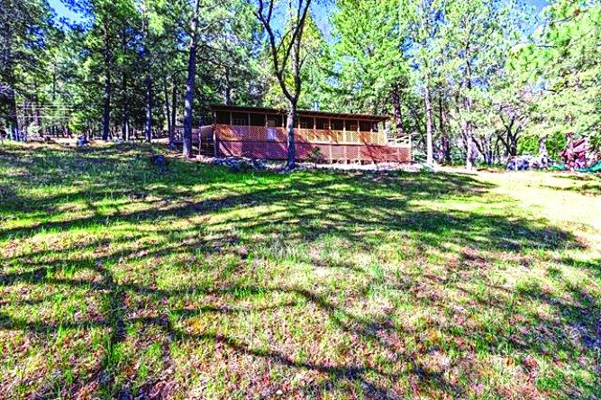
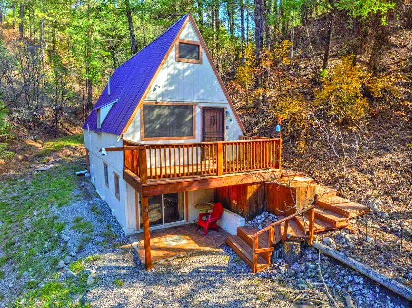
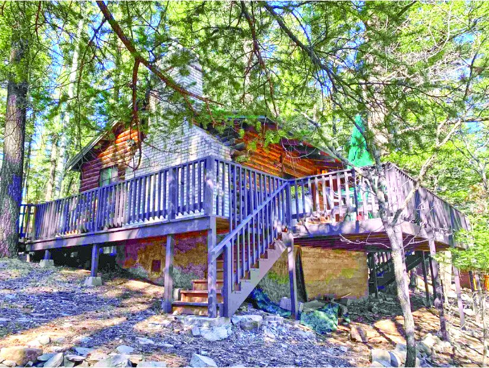
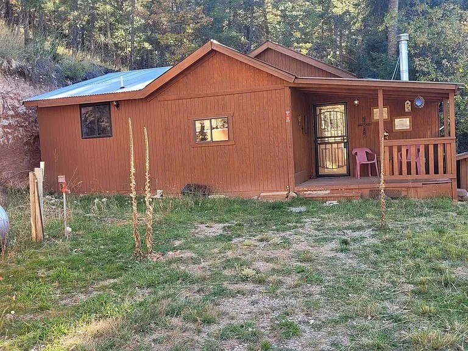
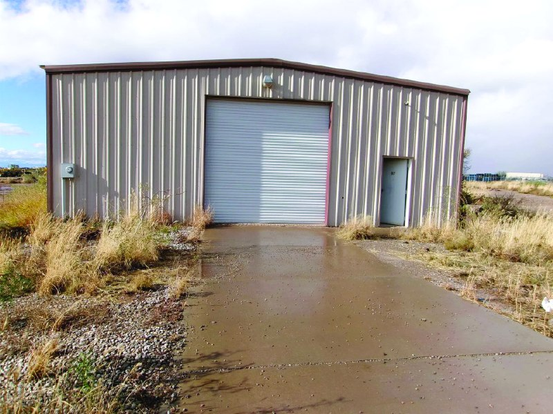
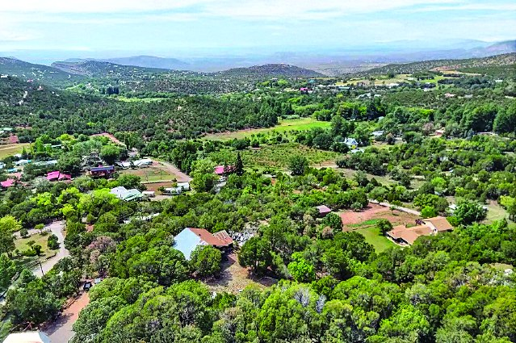
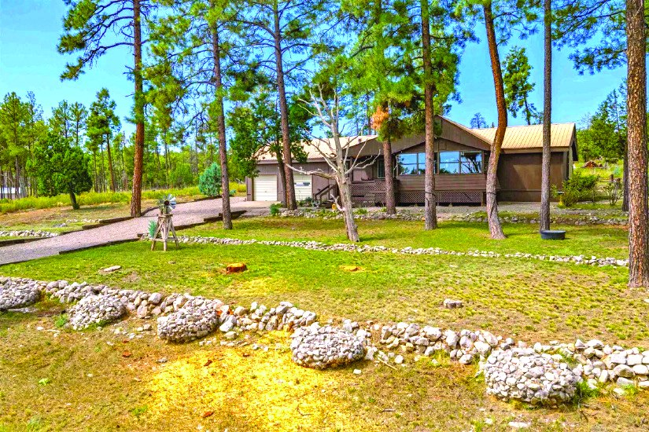

$210,000 4 Friar Tuck 3 bd · 1,320 sq ft · 28.0 acres Mayhill, New Mexico MLS #172571
2 Bedroom Property
$209,000
| Price | $209,000 |
|---|---|
| Bedrooms | 2 |
| Bathrooms | 1.75 |
| MLS # | 171884 |
| Listed by | Aspen Trails Realty |
| Print edition | October 2026 Otero County Edition, page 2 |
About this property
Charming Mountain Cabin nestled in the towering pines. 2 bdrm, 1.75 bath w/bonus loft, ideal for mountain getaways. Hardwood floors on 2 levels. Downstairs area w/bath & separate access for guests or possible entertainment area. Easy access & about ¼ mile from main hwy without the noise. Furnishings convey. New paint inside & out, newer roof, newer propane forced air unit & newer septic. 150 yards from Volunteer Fire Dept. Move right in and start enjoying everything the mountains have to offer.
Interested in this property?
Office phone: 575-682-7778
Aspen Trails Realty
Please contact the listing agent or company directly. The Real Estate Roundup is a publisher and does not show or sell properties.
Listing details and photo reproduced from the October 2026 print edition of The Real Estate Roundup (page 2), as printed. Prices and availability can change after publication — confirm with the listing agent.
More Homes

$205,000 2 Bedroom 0.209 Acre Property 2 bd · 1 ba · 0.209 acres MLS #172214
$199,000 1 Bedroom Property in Timberon 1 bd · 1.5 ba Timberon, New Mexico MLS #171701
$195,000 1.0 Acre Property 2,000 sq ft · 1.0 acres MLS #171887
$195,000 99 Haynes Canyon Rd MLS #173129
$225,000 3 Bedroom 1.5 Acre Property in Timberon 3 bd · 2 ba · 1.5 acres Timberon, New Mexico MLS #173293